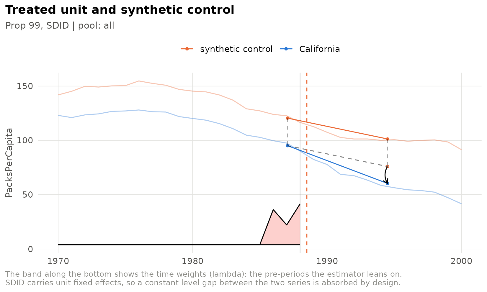
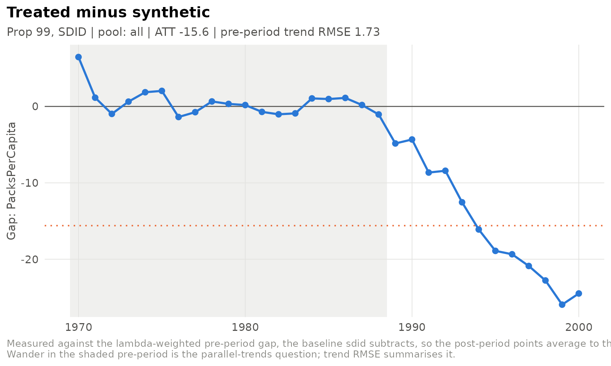
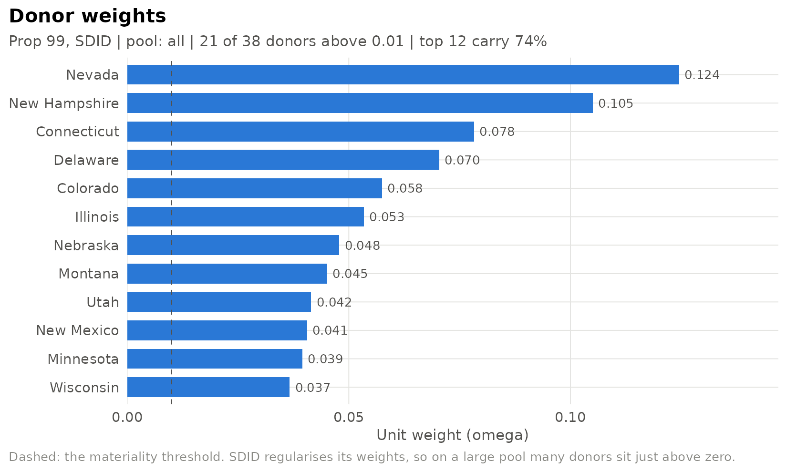
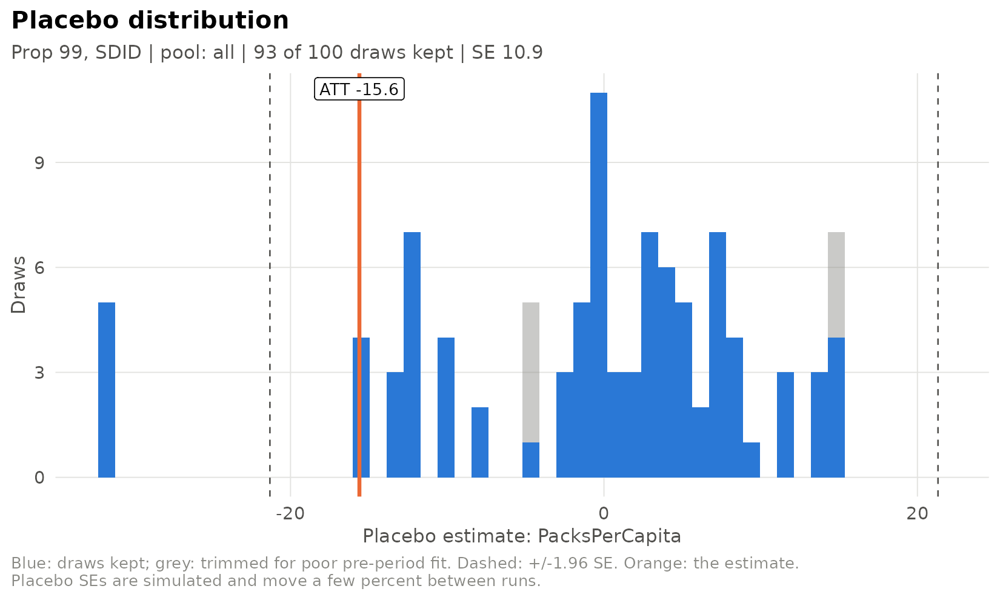
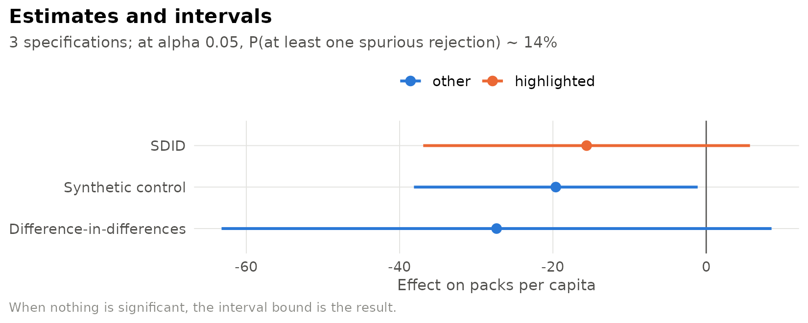

sdidlab fits synthetic difference-in-differences (SDID) for a single treated unit, with the inference and diagnostics that design needs. This vignette walks through the whole workflow on the standard example: California’s Proposition 99, which raised the cigarette tax in 1989.
A panel
sdidlab works on a long data frame, one row per unit and period. You
declare which columns are which with sdid_panel(). The
Proposition 99 data ship with synthdid, and prop99_panel()
wraps them:
panel <- prop99_panel()
panel
#>
#> ── sdid_panel
#> • 39 units (State) x 31 periods (Year, 1970-2000)
#> • outcome PacksPerCapita
#> • treatment treated
#> • columns PacksPerCapita and treatedThe panel has a 0/1 treated column, so sdidlab can work
out the treated unit (California) and the first treated period (1989) by
itself. For your own data, either give sdid_panel() a
treatment column or put them in the specification.
A specification
A specification describes one model completely: outcome, treated unit and timing, donor pool, covariates, estimator and inference. Anything you leave out takes its default.
spec <- sdid_spec(
label = "Prop 99, SDID",
inference = list(replications = 100)
)
spec
#>
#> ── sdid_spec Prop 99, SDID
#> • hash ae352f00fbff
#> • outcome (panel default)
#> • treated from the panel, timing from the panel
#> • window (panel start)-(panel end)
#> • pool all
#> • estimator sdid
#> • inference placebo, 100 reps, trim_k 5Fitting
fit_spec() builds the estimator’s inputs, fits the model
and runs placebo inference. Placebo standard errors are simulated, so
pass a seed to make one fit reproducible on its own;
seed_for(spec) derives one from the specification
itself.
run <- fit_spec(spec, panel, seed = seed_for(spec))
run
#>
#> ── sdid_run Prop 99, SDID
#> • ATT -15.6 95% CI [-36.9, 5.71]
#> • SE 10.9 (t = -1.43)
#> • fit sdid, N0 = 38, T0 = 19, pre-period RMSE 1.73
#> • placebos 93/100 kept at trim_k 5
#> • treated California from 1989
#> • spec ae352f00fbff run 20260929T054441400461-ae352f00The estimate is the published one: Arkhangelsky et al. (2021) report
-15.6 packs per capita. The point estimate and weights come straight
from synthdid::synthdid_estimate(); with no trimming
(trim_k = Inf) the standard error is synthdid’s own placebo
standard error, draw for draw. The default trims placebos that fit the
pre-period more than five times worse than California does – see
vignette("placebo-inference") for why.
Looking at the fit
Every plot takes the run and returns a ggplot. The trajectory shows California against its synthetic control, with the time weights along the bottom:
plot_sdid_trajectory(run)
The gap path shows treated minus synthetic in every period, measured against the baseline SDID subtracts, so its post-period points average to the ATT:
plot_gap_path(run)
The donor weights show which states make up the synthetic California:
plot_donor_weights(run, top_n = 12)
And the placebo distribution shows where the standard error came from:

Comparing specifications
run_specs() fits a list of specifications, each with its
own seed, and sdid_results_table() collects them. Here the
three estimators synthdid provides, plus a classic synthetic
control:
specs <- list(
sdid_spec(label = "SDID", inference = list(replications = 100)),
sdid_spec(label = "Synthetic control", estimator = "sc", inference = list(replications = 100)),
sdid_spec(label = "Difference-in-differences", estimator = "did", inference = list(replications = 100))
)
runs <- run_specs(specs, panel, progress = FALSE)
results <- sdid_results_table(runs)
results[, c("label", "ATT", "SE", "ci_lo", "ci_hi", "trend_rmse")]
#> label ATT SE ci_lo ci_hi trend_rmse
#> 1 SDID -15.60 10.90 -36.92 5.710 1.73
#> 2 Synthetic control -19.62 9.44 -38.13 -1.113 1.66
#> 3 Difference-in-differences -27.35 18.30 -63.23 8.527 7.16
plot_att_forest(data.frame(label = results$label, att = results$ATT,
ci_lo = results$ci_lo, ci_hi = results$ci_hi),
highlight = "SDID", xlab = "Effect on packs per capita")
Where next
-
vignette("specs-and-runs"): YAML specifications, sweeps, the run store, generating reproducible scripts, and plugging in your own outcomes and donor pools. -
vignette("placebo-inference"): trimmed placebo inference and its diagnostics. -
vignette("synthetic-control"): the bias-corrected synthetic control, exact fits, the Abadie-L’Hour penalty and permutation inference. -
run_demo()opens an interactive app for all of the above.